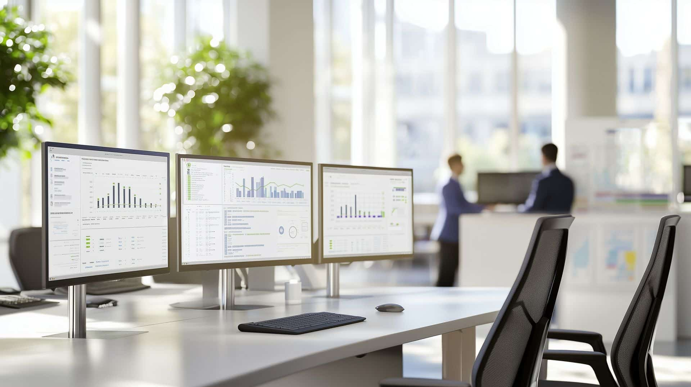
Diensten
Slimme development en maatwerk aanpassingen, gebouwd vanuit de praktijk.
Goede development vraagt om technische diepgang, branchekennis en een scherpe blik op de dagelijkse praktijk. Bij DIS Group ontwikkelen we klantspecifieke aanpassingen die naadloos aansluiten op jouw processen binnen 4PS Construct / Microsoft Business Central. Geen onnodige complexiteit, maar doelgerichte oplossingen voor jouw ERP systeem die jouw werk ondersteunen en vereenvoudigen.
Onze developers combineren diepgaande technische kennis met ruime ervaring in de bouw-, GWW- en installatiesector. Zij denken verder dan code alleen en kijken altijd naar het proces en de gebruikers. Development wordt bij ons niet gedreven door techniek, maar door de vraag hoe we jouw organisatie slimmer, efficiënter en toekomstbestendig kunnen laten werken. Wij leveren maatwerkoplossingen die jij nodig hebt.
Onze werkwijze is helder en transparant. We starten met een grondige analyse van de vraag en de impact op processen en bestaande inrichting. Vervolgens vertalen we dit naar een doordachte oplossing, die zorgvuldig wordt ontwikkeld, getest en opgeleverd. Je hebt tijdens het hele traject direct contact met de developer en weet precies waar je aan toe bent. Persoonlijk contact en korte lijntjes is voor ons erg belangrijk.
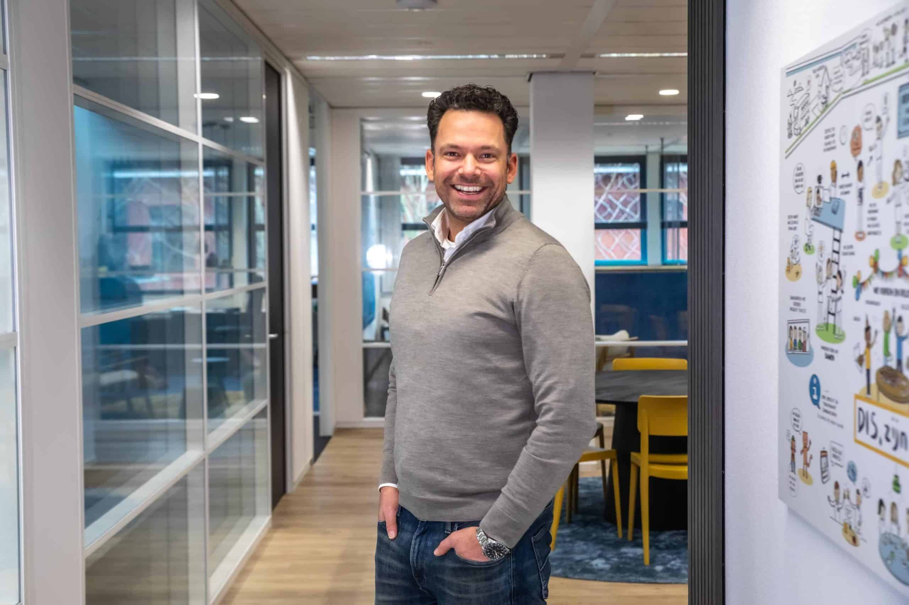
Wij helpen je onder andere met:
Bekijk voor wie wij dit doen
- Ontwikkeling van extensies en klantspecifieke aanpassingen
- Development voor Microsoft Business Central
- Realisatie van koppelingen via webservices en API’s
- Ontwikkeling van RDLC-rapportages en lay-outs
- Dataconversie en migratie
- Performance-analyse en optimalisatie
- Onafhankelijk advies over klantspecifieke aanpassingen en upgrades
- PowerPlatform
Bekijk voor wie wij dit doen
Development staat bij DIS Group nooit op zichzelf. We werken nauw samen met consultancy en functioneel beheer, zodat keuzes in inrichting, processen en development goed op elkaar aansluiten. Het resultaat: samenhangende oplossingen die vandaag én in de toekomst beheersbaar blijven.
Bij alles wat we ontwikkelen staat de gebruiker centraal. We zorgen voor herkenbare oplossingen die aansluiten op bestaande werkwijzen en daardoor goed werken in de praktijk.
Development bij DIS Group: praktisch, doordacht en betrouwbaar. Met korte lijnen, duidelijke afspraken en aandacht voor de gebruiker én de toekomst.
Neem contact op
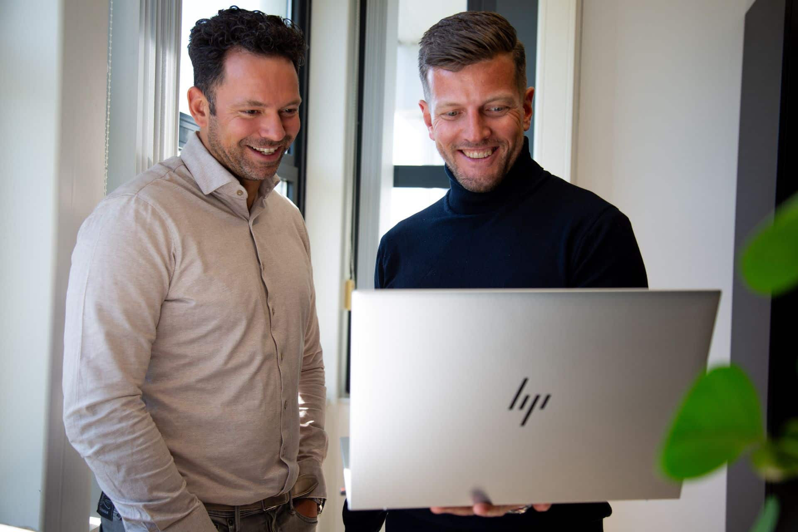
Enkele van onze opdrachtgevers
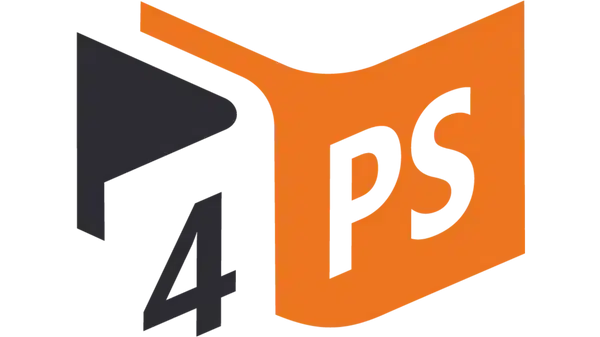
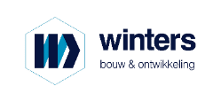
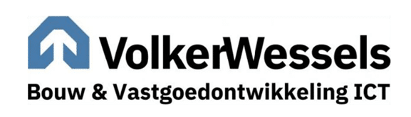
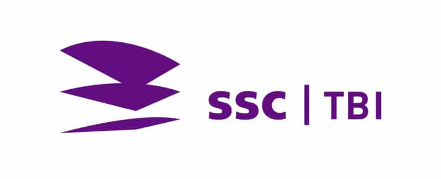
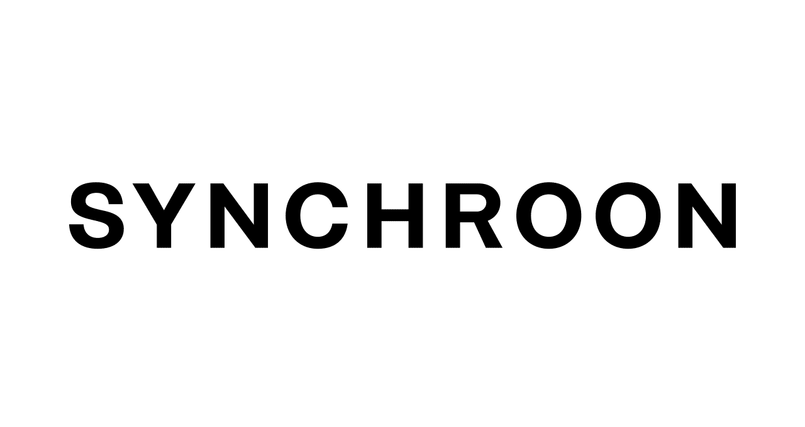
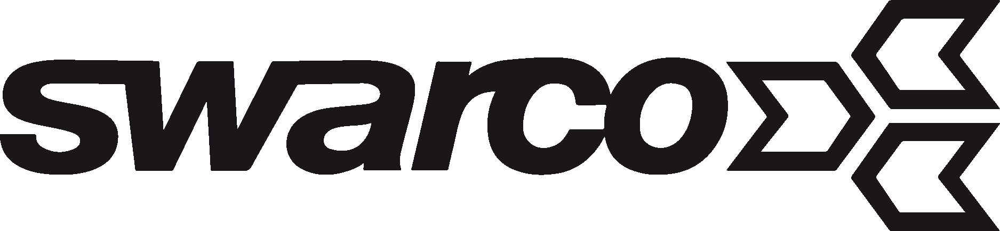
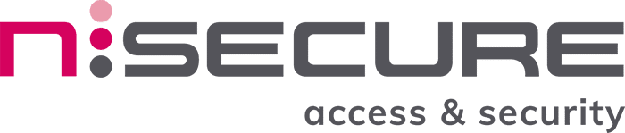
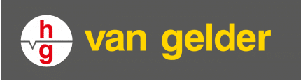
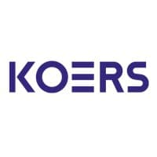
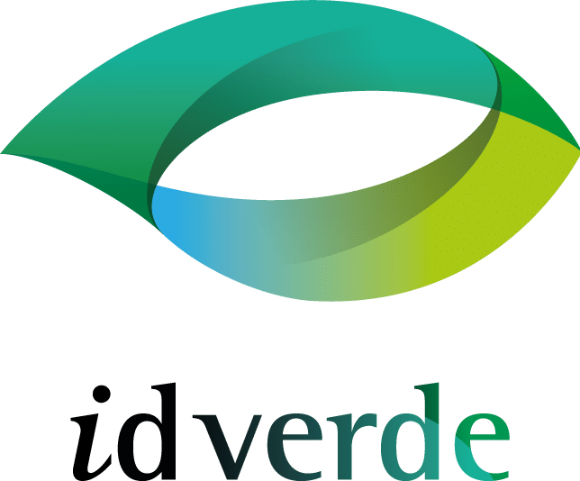
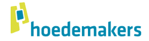
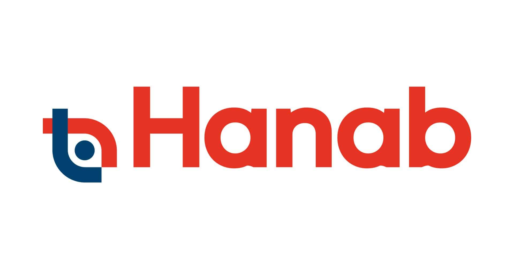
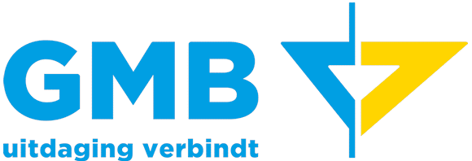
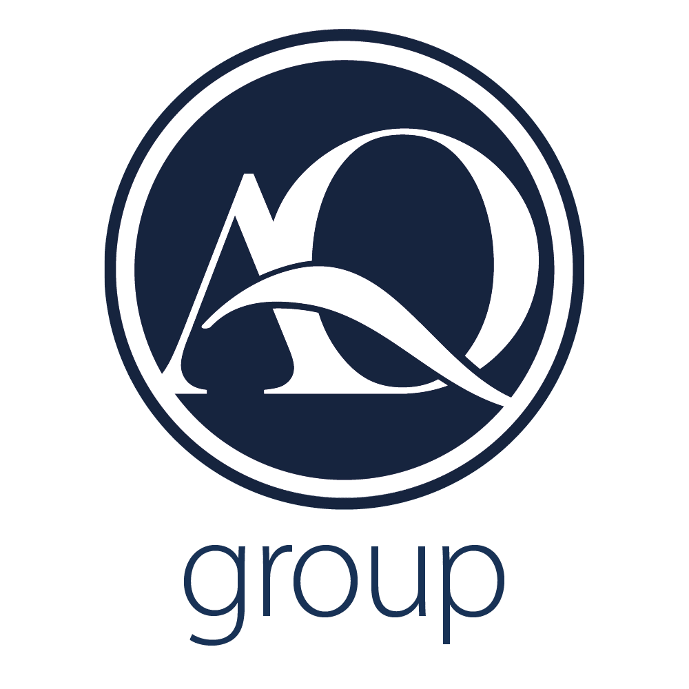
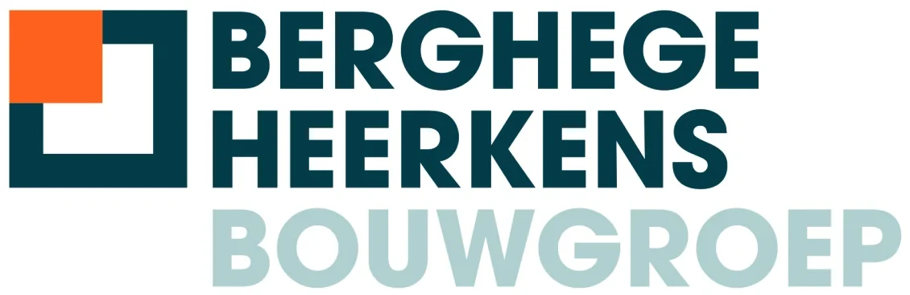
Referenties
AQ Group
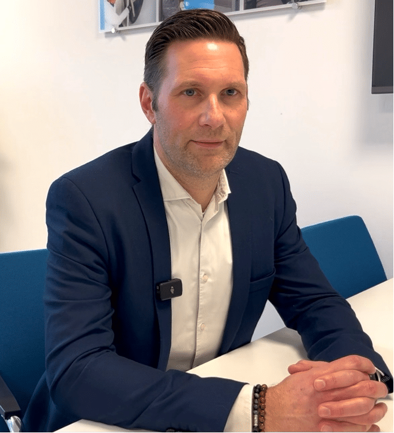
“Daadkrachtige consultants met veel kennis in huis”
Lees meer
Remondis
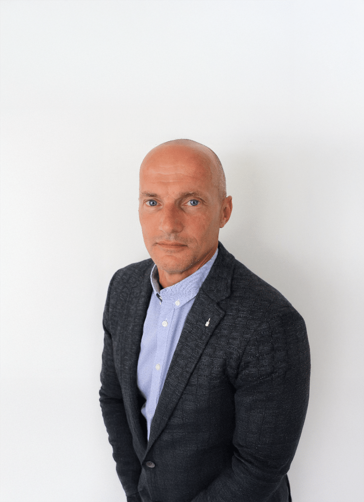
“Snel resultaat door gerichte 4PS ondersteuning”
Lees meer
Vrolijk Groep
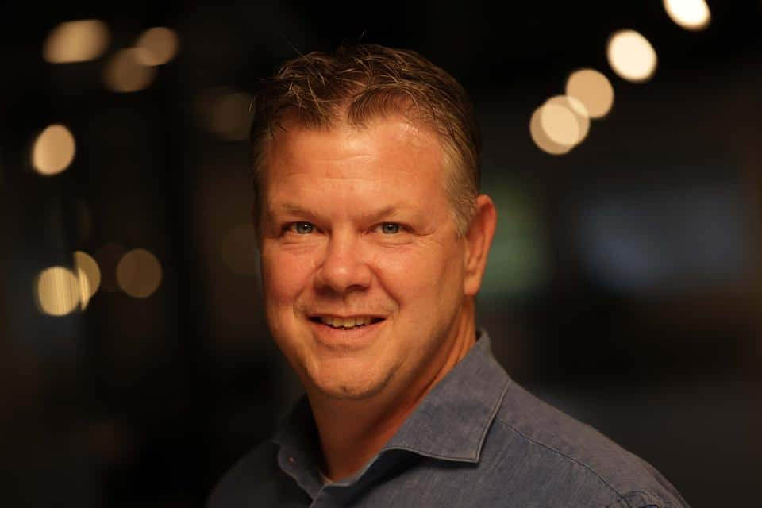
“Flexibel, efficiënte toevoeging, deskundig, snel schakelen”
Lees meer